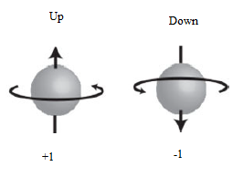
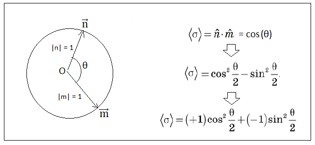
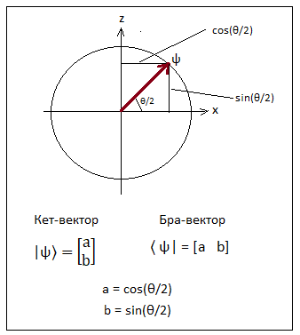
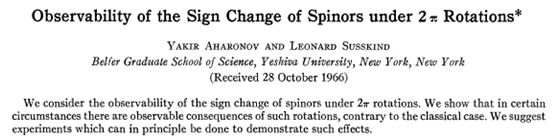
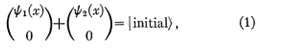

Change the angle value in GUI in the upper right part of the program window.
Let's recall the results obtained during the Stern-Gerlach experiment. Let's draw a circle with a radius equal to 1
and mark the measurement results on it, placing the Stern-Gerlach device at some angle to the original measurement.
The values +1 and -1 will be located at opposite points of the diameter.
After the experiment, the direction of the electron spin in the physical space will coincide with
the direction of the axis of the device. You can draw vectors from the center of the circle
to the corresponding points on the circle and take these vectors as some objects describing the state of spin.
These vectors will have opposite directions. Further in the text are explanatory drawings.
However, from the point of view of the mathematical description of spin,
it is much more convenient to introduce a method when the states +1 and -1 are located
not on opposite points of the circle, but on vectors perpendicular to each other.
This method allows us to apply linear algebra methods to the description of spin and use complex numbers.
Also, as a result, half corners appear.
В предыдущем разделе был детально рассмотрен эксперимент Штерна-Герлаха. Теперь попытаемся математически
описать его результаты. В ходе эксперимента выяснилось, что спин электрона может принять только
одно из двух значений, которые мы обозначили как +1 или -1. Эти два значения всегда противоположны
друг другу.

При анализе эксперимента Штерна-Герлаха было полученно только одно математическое соотношение 〈σ〉 = cosθ. Это соотношение говорит о том, что если приготовить спин вдоль некоторой оси, а затем повернуть прибор Штерна-Герлаха таким образом, чтобы он стал направлен вдоль другой оси, и затем измерить спин, то прделав эту процедуру несколько раз мы получим среднее значение спина равное косинусу угла между осями прибора и приготовленного состояния электрона.
Исходя только из этого соотношения 〈σ〉 = cosθ попытаемся создать математическую теорию описывающую
спин электрона. Перепишем эту формулу в следующем виде
〈σ〉 = cos(θ) = cos2(θ/2) - sin2(θ/2)
= (+1)·cos2(θ/2) + (-1)·sin2(θ/2)

В предыдущем разделе присутствует более подробное рассмотение смыла приведенных соотношений.
В последнем соотношении квадраты половинных углов можно интерпретировать как вероятности измерения спина равные +1 и -1.
Очевидно, что сумма этих вероятностей должна быть равна 100% или
cos2(θ/2) + sin2(θ/2) = 1.0
Косинус и синус половиннго угла θ/2 можно интерпретировать как координаты некоторого вектора ψ имеющего
единичную длину.

Следует обратить особое внимание на тот факт, что вместо угла θ появился половинный угол θ/2.
В данном случае половинный угол появился весьма естественно вследствие несложных тригонометрических преобразований.
Однако на самом деле половинные углы играют особую роль в математике квантовой механики.
Обозначим координаты вектора ψ при помощи обозначений принятых в квантовой механике. В ней вектора записываются при помощи специальных скобок. Это так называемая "нотация Дирака". В этой нотации вектор-столбец называется кет-вектором и обозначается как |ψ〉, а вектор-строка называется бра-вектором и обозначается как 〈ψ|. Конечно, можно и не использовать для записи векторов нотацию Дирака, а обозначать векторы так, как принято в обычной линейной алгебре. Однако, при постоянной работе с квантовыми объектами, нотация Дирака оказывается (неожиданно) весьма привлекательной и удобной.
Теперь перед нами появилась проблема получения направления вектора 〈ψ| при помощи половинных углов. Для этого прежде всего необходимо определить базисные векторы системы координат которая будет использоваться.
Классической аналогии спину нет, но часто под спином понимают вращение электрона вокруг своей оси. Говорить, что спин это шарик вращающийся вокруг своей оси - просто попытка придать хоть какую-то наглядность спину. Иногда явление спина объясняют с точки зрения симметрии системы. Для этого вводят спиновое число S - количество оборотов которое необходимо для того, чтобы перевести тело само в себя.
Если тело обладает спином S = 0, то поворот на любой угол переводит его само в себя. Пример - шар.
Если тело обладает спином S = 2, то поворот на угол 360° переводит его само в себя. Пример - любой объект.
Если тело обладает спином S = 1, то поворот на угол 180° переводит его само в себя. Пример - игральная карта. Если валет повернуть на 180°, то он перейдет сам в себя.
Для электрона спин S = 1/2. Это значит что объект переходит сам в себя при повороте на 720°. То есть требуется два целых поворота для приведения квантового объекта в исходное состояние. (Только не следует путать значение спина S = 1/2 со значениями спина +1 и -1 полученными при поведении эксперимента Штерна-Герлаха.)
Спин (но на самом деле - спинор) можно представить как объект двигающийся по ленте Мебиуса и приходящий в ту же самую точку только при повороте на 720°.
Но фактически все происходит (как я это понимаю) несколько иным образом. Следует делать различие между физическим состоянием электрона и его математической моделью, которая носит название спинор. Физический электрон переходит в исходное состояние за один полный поворот на 360°. Но спинор - математическая модель электрона - переходит в исходное положение за два оборота электрона в физическом пространстве (720°). Попытаемся объяснить это различие.
Проведем окружность с радиусом равным 1 и будем отмечать на ней результаты измерений, располагая прибор Штерна-Герлаха под некоторым углом к первоначально проведенному измерению. Значения +1 и -1 расположатся на противоположных точках диаметра. Угол состояния спина будет соответствовать углу поворота прибора. Можно провести векторы из центра окружности к соответствующим точкам на окружности и принять эти векторы как некоторые объекты описывающие состояние спина.
Однако, с точки зрения математического описания спина, гораздо удобнее ввести способ, когда состояния +1 и -1
располагаются не на противоположных точках окружности, а на векторах перпендикулярных друг другу.
Такой способ позволяет к описнию спина применять методы линейной алгебры и использовать комплексные числа.
К тому же приведенная выше формула с половинными углами
〈σ〉 = (+1)·cos2(θ/2) + (-1)·sin2(θ/2)
органично вписывается в этот подход задания состояний +1 и -1 на векторах перпендикулярных друг другу.
Обычно на переход к ортогональному описанию состояния спина в большинстве книг по квантовой механике не обращается должного внимания. Способ описания состояния спина электрона ортогональными векторами считается совершенно очевидным. Однако, затем у многих возникает вопрос - откуда в квантовой механике появляются половинные углы? Почему для приведения спина в исходное состояние требуется поворот не на 360° а на 720°? Ответ на этот вопрос такой - только в математическом (спинорном) пространстве появляются половинные углы. И на самом деле физически электрон не требует поворота на 720° для приведения в исходное состояние. Часто незаметно совершается подмена физического пространства состояний электрона на спинорное пространство состояний.
Теперь, когда направления спина электрона и оси прибора задаются при помощи половинных углов в спинорном, а не в физическом пространстве, требуется научиться находить эти направления в спинорном пространстве. Для этого используются собственные векторы операторов. Грубо говоря, собственный вектор - это направление в спинорном пространстве. Если мы приготовляем спин электрона в физическом пространстве в состояние +1 в заданном направлении n, то в спинорном пространстве ему будет соответствовать свой вектор. Если мы поворачиваем прибор Ш-Г для измерения значения спина в определенном направлении m, то в спинорном пространстве ему также будет соответствовать некоторый собственный вектор. Зная эти два вектора в спинорном постранстве мы можем найти вероятность того, что в результате измерения вдоль оси m в физическом пространстве, будет получено +1.
Собственные вектора находятся при помощи так называемых спиновых операторов. Каждому собственному вектору электрона соответствует свой оператор спина. Расчет собственных векторов подробно рассмотрен в главе 4.
Приведенная визуализация демонстрирует тот факт что когда спинор делает поворот только на 180°, то в это время электрон возвращается в исходное положение сделав поворот на 360°. Спинор имеет два состояния, отличающиеся знаком "+Up" и "-Up", которые на самом деле соответствуют одному и тому же состоянию спина электрона в физическом пространстве.
Чтение следующего дополнения можно пропустить.
Во многих случаях почему-то не делают различия между физическими и спинорными вращениями и говорят,
что для того чтобы вернуть электрон в исходное состояние необходимо его повернуть на 720°.
В интернете можно найти множество роликов в которых показывается как поворот на 720°
приводит объект в исходное состояние.
В качестве типичного примера иногда приводится традиционный филиппинский танец под названием
Бинасуан,
где танцоры держат полные бокалы вина в ладоне каждой руки, вращая ладони над и под локтями,
чтобы ладони всегда были обращены вверх (чтобы избежать пролития жидкости).
Причина, по которой вращение руки на 2π не возвращает объект-тело к тому же состоянию,
заключается в том, что рука является не изолированной сущностью, а частью более крупной
сущности – всего тела человека, которому рука принадлежит. И геометрия этого соединения такова,
что только при выполнении двух полных оборотов тело-объект может восстановить свое точное
начальное состояние. 2π-вращение руки танцора Бинасуана не может привести все его тело
в ту же конфигурацию.
Были проведены и эксперименты с квантовыми объектами в которых пытались найти подтверждение
того, что 2π-вращение произведет заметный эффект, и, следовательно, только 4π-вращение
приводит объект в исходное состояние. Вот что говорится в одном из лучших видео на тему
Dirac's belt trick, Topology, and Spin ½ particles начиная с 54 минуты:
Есть ли способ экспериментально обнаружить знак минус, возникающий при вращении на 2π?
Удивительно, но ответ: да! Вот как.
Сначала возьмите свой электрон, а затем поместите его в квантовую суперпозицию в двух разных
местах. Затем подействуйте на один из них магнитным полем, повернув его на 2π радиан, индуцируя
знак минус. Наконец, рекомбинируйте электроны. В конце концов, вы обнаружите интерференционные
эффекты, возникающие из-за знака минус. Именно это уже было сделано с нейтронами.
То есть в экспериментах выяснилось, что эффект вращения на 720° можно обнаружить только тогда, когда вращается не вся волновая функция, а только та ее часть, которая проходит через область магнитного поля, тогда как на другие ее части поле вообще не влияет.
Вот цитата профессора Константина Пирона из его курса квантовой механики, в которой
он использовал следующее сравнение:
Возьмите долларовую купюру. Когда она целая, мы можем сказать, что
доллар находится где-то в пространстве, как классическая сущность. Но что
произойдет, если банкноту разорвать на две части, а полученные две части
пространственно разделить и, скажем, положить каждую в другую коробку?
В этой ситуации мы не можем сказать, что доллар все еще находится где-то
в космосе: он исчез из космоса, но тоже не полностью. Мы все еще можем
сказать, что в некотором смысле доллар присутствует в обеих коробках, но в
то же время он явно не содержится ни в одной из них. Две
коробки, взятые вместе, содержат один доллар, но если рассматривать их
по отдельности, то это не так. Все, что мы можем сказать, это то, что они
обе содержат потенциальный доллар, который может стать реальным
только тогда, когда две банкноты будут объединены.
Приведу перевод еще одной статьи из которой можно сделать вывод, что нельзя обнаружить отличие в состоянии исходного квантового объекта и объекта повернутого на 360°. В ней говорится, что такое отличие можно зафиксировать только если система разделена на две части. Можно сделать вывод, что нельзя отождествлять вращение электрона в физическом пространстве с вращением электрона в спинорном пространстве. Такое отождествление можно сделать только предположив, что сам спинор это и есть электрон. Но этого быть не может.

Обычно говорят, что изменение знака спиноров, которые вращаютс на угол 2π, ненаблюдаемы, поскольку физические величины квадратичны в волновых функциях. Цель настоящей статьи - продемонстрировать, что в определенных ситуациях изменение знака можно наблюдать. Я хотел бы, чтобы мы сначала прояснили, что подразумевается под вращением 2π в этом контексте. Конечно, вращение на 2π всей Вселенной ненаблюдаемо. Если уж на то пошло, то же самое относится и к любому вращению всей Вселенной. Таким образом, любое значимое различие между вращениями 2π и другими вращениями должно относиться к относительному вращению между одной системой и другой. В классической физике как относительные, так и абсолютные 2π вращения неразличимы. Рассмотрим два эксперимента Gedaekem, чтобы показать, что своеобразное изменение знака спиноров при вращениях 2π может привести к наблюдаемым эффектам.
Рассмотрим электрон, заключенный в коробку с отражающими стенками. Коробка разделена на два одинаковых отсека,
разделенных непроницаемой перегородкой. В перегородке есть отверстие, которое может быть закрыто заслонкой.
Отверстие изначально открыто, так что электрон может свободно перемещаться туда и обратно.
Первоначально электрон находится в состоянии со спином в направлении z, описываемом спинором

где ψ1 (x)- волновая функция в отсеке 1, а ψ2 (x) - волновая функция в отсеке 2.
Теперь затвор закрыт, разделяя коробку на два изолированных отсека (две коробки), которые впоследствии
отделяются друг от друга на большое расстояние. Мы предполагаем, что в течение всего процесса к электрону
не было приложено никаких сил, которые могли бы повлиять на его спин.
Затем к каждой коробке прикладываются равномерные магнитные поля в направлении оси z.
Две коробки, каждая со своим собственным магнитным полем, могут рассматриваться как изолированные системы,
которые, следовательно, могут подвергаться относительным вращениям.
Мы рассматриваем эффект вращающейся коробки 1 вместе с прикрепленным к ней магнитным полем с вращением
на 2nπ - вокруг оси x.
Простой расчет показывает, что если вращение квазистатическо то часть волновой функции
электрона во коробке 1 умножается на
ei(𝜇H/ℎ)t Rx(ωt) (2)
Здесь H - величина магнитного поля, μ - магнитный момент электрона, t - время, измеренное с начала вращения,
Rx (θ) - оператор вращения спина для вращения вокруг оси x, а ω - угловая частота вращения.
Квазистатический характер вращения означает, что ω << μH/ℏ. После завершения n полных 2π вращений ωt = 2nπ
Rx (ωt) = ( -1 )n.
Следовательно, электронная волновая функцияв коробке 1 умножается на
(-1)nei2𝜋𝜇Hn/ℎω (3)
Часть волновой функции электрона в коробке 2 умножается на
ei2𝜋𝜇Hn/ℎω (4)
Если теперь открыть заслонки в двух коробках и позволить электронным волновым функциям ψ1 и ψ2 объединиться и интерферировать, интерференционная картина будет явно зависеть от относительного знака ψ1 и ψ2 и, следовательно, от числа 2π оборотов, которым подвергается коробка 1. В общем, мы можем сказать, что если фермионы когерентно распределяются между двумя пространственно изолированными системами, то может наблюдаться относительное вращение в 2π.
Представьте себе две системы, имеющие свободные электроны и проявляющий туннельный ток, когда они находятся близко друг к другу. Затем мы разделяем системы пространственно и поворачиваем одну из них n раз относительно другой и объединяем их так, чтобы туннельный ток мог снова течь. Оказывается, что направление тока зависит от n по модулю 2. Чтобы увидеть это, обратите внимание, что туннельный ток пропорционален sin(α), где α - относительная фаза волновой функции каждого электрона в системах 1 и 2. Вращение системы 1 только на 2πn изменит знак части каждой волновой функции в системе 1 на (-1)", оставляя волновую функцию 2 неизменной.
Из всего вышесказанного и приведенных выше цитат можно сделать вывод, что к высказываниям о том, что
только вращение на 720° переводит физический электрон в исходное состояние, следует подходить
с большой осторожностью.
Но спинор, который используется в качестве математической модели для
описания вращения электрона, переходит в исходное состояние только при повороте на 720°.